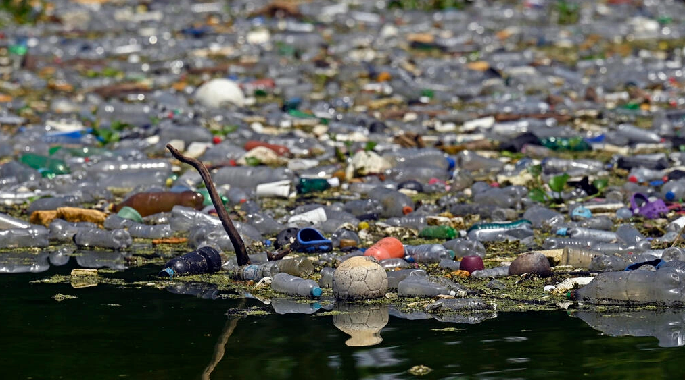

La Contaminación del Agua
La contaminación del agua consiste en la alteración y deterioro del agua hasta hacerse inservible,
es decir, hasta volverse tóxica para el consumo de las especies terrestres e inhabitable para las especies acuáticas.
También se conoce como contaminación hídrica.
Cuando se introducen partículas contaminantes en el agua, esta pierde su calidad. Conforme aumenta el nivel de contaminación
hídrica, surgen otros problemas como la propagación de enfermedades o la desaparición de flora y fauna.
Generalmente, la contaminación del agua es consecuencia de la acción humana, aunque también puede responder a fenómenos naturales.
El ser humano puede contaminar el agua mediante muchas de las actividades que realiza, ya que estas pueden generar desechos o tener
consecuencias colaterales. Por ejemplo, acumulación de desechos orgánicos o inorgánicos cerca de las fuentes de agua; vertido de
sustancias contaminantes en tuberías o ríos; explotación indiscriminada de la ganadería, etc. |
 |
Causas por la contaminación del agua